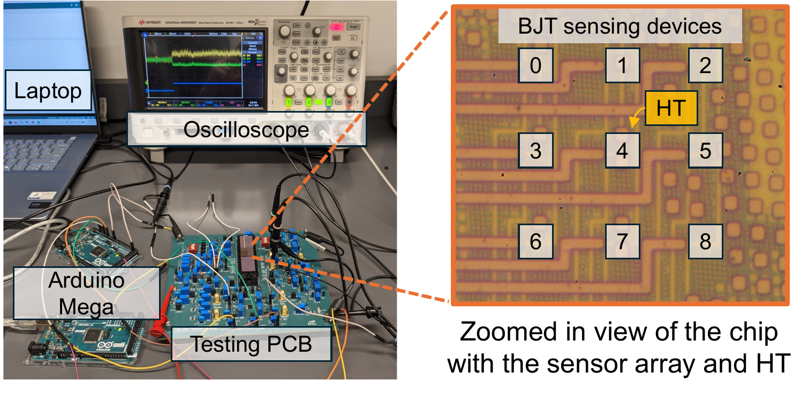
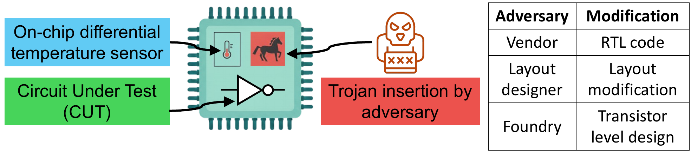
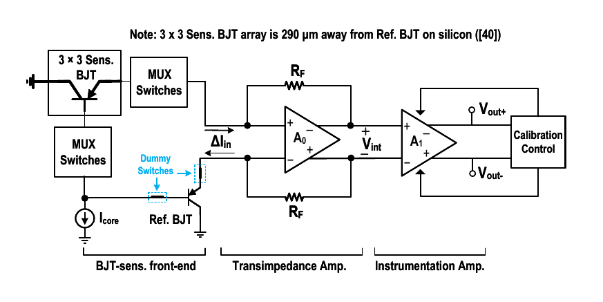
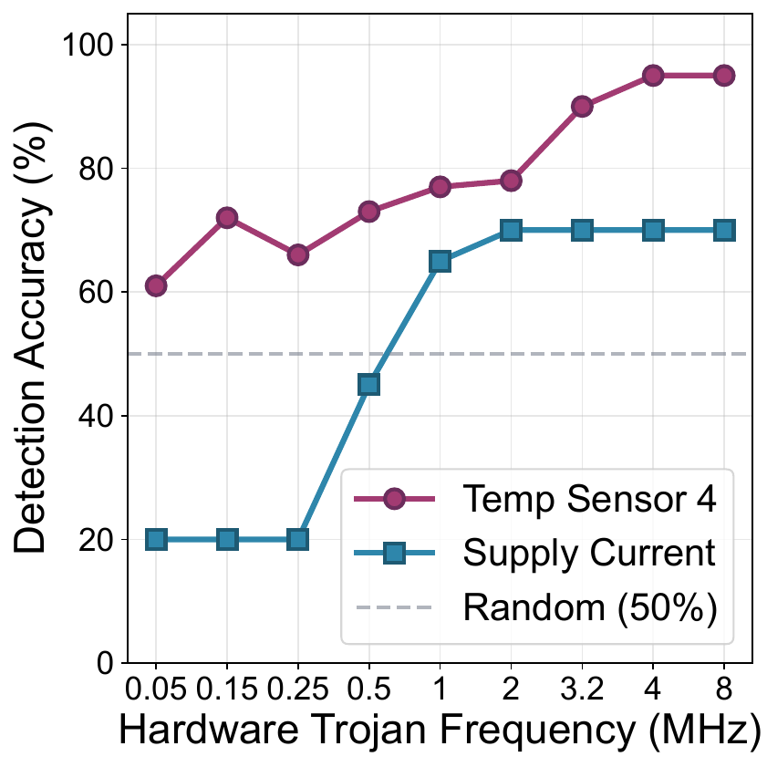
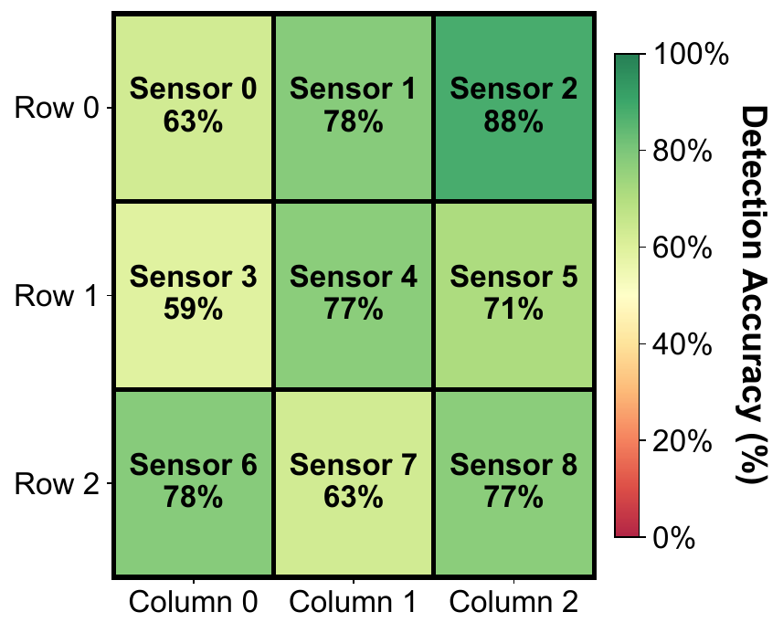
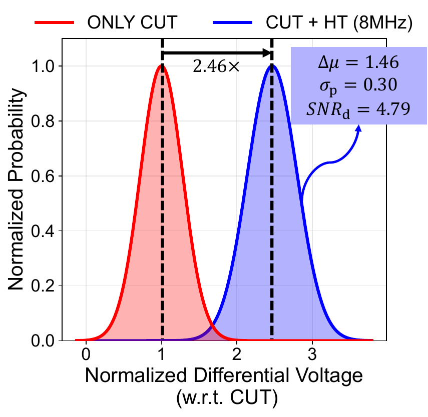
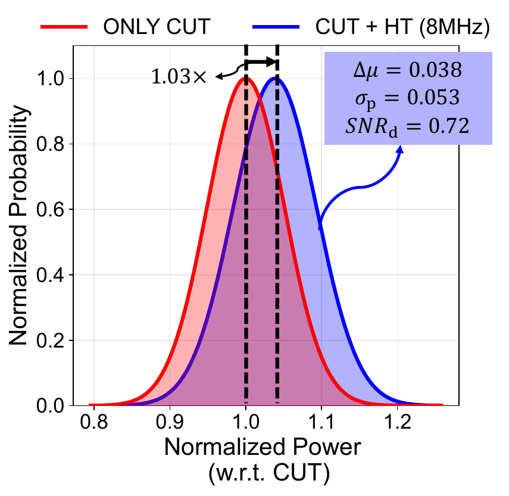

Couple
Active circuit power spreads through the shared silicon substrate as a local temperature gradient.
IEEE TCAS-I · Accepted paper
The circuit produces heat. The sensor captures the gradient. HOTSPOT learns when the measured thermal profile no longer looks trusted.
Hardware Observation via Temperature Sensing for Protection against On-Chip Trojans

The approach
HOTSPOT connects electrothermal coupling, differential sensing, and one-class learning without loading the circuit under test.
Active circuit power spreads through the shared silicon substrate as a local temperature gradient.
Nine BJT devices are time-multiplexed into one calibrated differential sensor core.
An autoencoder trained only on trusted CUT waveforms flags high reconstruction loss.


Temperature changes modulate the BJT emitter currents. The transimpedance and instrumentation amplifiers produce a differential output, while calibration suppresses DC mismatch before each acquisition.
9 → 1Multiplexed sensing
0.75 mm²Total prototype area
Measured evidence

Detection accuracy across the sweep
Plateaus at and above 4 MHz
95% versus 70% accuracy
Deployment note: clock frequency is swept only to control Trojan power during characterization. In-field detection does not require clock control.

Strongest measured thermal coupling
Used for the full power comparison
Across all nine sensor positions
Interpretation: distance alone is insufficient. Local power, routing, vias, materials, and thermal resistivity also shape sensitivity.


Relative to CUT-only measurement
Substantial distribution overlap remains
At 1.95 µW Trojan power
Evidence boundary
The site preserves the paper’s trust assumptions, test-structure boundary, variation study, and limited-data uncertainty.
HOTSPOT is most effective when active behavior produces a localized thermal change above the measured detection floor.
The prototype sweeps a minimum-sized inverter with a floating output. It does not implement full trigger and payload logic.
The one-class detector learns CUT-only behavior. A compromised golden reference invalidates the underlying assumption.
Supply-voltage stress emulates corner-induced power shifts. Stored scaling and offset vectors normalize incoming measurements.
Next step: broader evaluation with dormant and active functional Trojan benchmarks. The current results should not be read as universal detection across all Trojan types or power levels.
Research team
Northeastern University · Analog Devices · Louisiana State University